- 
Have you ever look at the night sky and wished on a shooting star? What do you wish for? With light pollution obscuring the natural glow of the night stars, very soon, we won't see anymore shooting stars to wish on. We can't rely on the hopeful promise of a shooting star to make the stars shine brighter. We need to face light pollution head on - for the betterment of our stars, our animals and for us. Let's make those wishes come true - right here on StarGlow